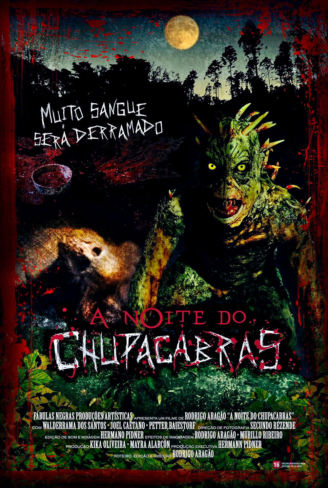

FILMS · 2011
The Night of the Chupacabras (2011)
While some ersatz film critics devote themselves to writing badly about ultramodern movies endowed with an unbearable degree of boredom — a.k.a. elevated horror — this elderly scribbler addressing you is busy with a genuinely noble task: watching cheap Chupacabras movies from the ’90s and 2000s.
It is very easy to find people writing about academically deconstructed post-horror, but discussions of the fascinating wave of chupacabraploitation that began in the ’90s and took root in SOV/direct-to-video are practically nowhere to be found, even though its chronology also includes a handful of theatrical releases:
1996 — El Chupacabras — Gilberto de Anda — Mexico — theatrical feature
1997 — Guns of El Chupacabra — Donald G. Jackson and Scott Shaw — United States — DTV
1998 — Guns of El Chupacabra II: The Unseen — Donald G. Jackson and Scott Shaw — United States — DTV
1998 — Crimes of the Chupacabra — Donald G. Jackson and Scott Shaw — United States — DTV / alternate version of Guns of El Chupacabra
2000 — Legend of the Chupacabra — Joe Castro — United States — SOV/DTV
2000 — Chupa — Tom Hoover — United States — SOV/DTV
2003 — El Chupacabra — Brennon Jones and Paul Wynne — United States — DTV
2003 — Bloodthirst: Legend of the Chupacabras — Jonathan Mumm — United States — DTV
2005 — Bloodthirst 2: Revenge of the Chupacabras — Jonathan Mumm — United States — DTV
2005 — Mexican Werewolf in Texas — Scott Maginnis — United States — DTV
2005 — Chupacabra Terror (Chupacabra: Dark Seas) — John Shepphird — United States — television film/DTV
2011 — The Night of the Chupacabras — Rodrigo Aragão — Brazil — theatrical feature
And it is precisely this last one that is the subject of this autopsy: a feature made years after the others, yet still sharing many of the characteristics of this peculiar underground subgenre.
In the story, the Silva and Carvalho families have been locked in a rivalry that has lasted for decades, but after a corpse turns up with a bite in its neck, director and screenwriter Rodrigo Aragão sets the machinery of a good old-fashioned, dust-covered western in motion: an eye for an eye, a tooth for a tooth, and a shotgun between the two.
The difference is that this is a monster movie.
And in this war between the families, it has chosen its side:
the side that kills them both.
The film does not make the Chupacabra the absolute center of the narrative. It prowls around the edges of the conflict between the Silva and Carvalho families while the humans kill each other, as they always do, without any supernatural intervention — which may be an irony in a movie called The Night of the Chupacabras, or an outrage to anyone who simply wanted to see an ugly beast sucking human blood.
Here lies one of the film's main ideas: the creature does not create the savagery; it merely finds an environment in which it is already flourishing, where men are every bit as monstrous as it is.
The story moves along, and then I realize that Petter Baiestorf is in this movie.
If you like underground video, you should look this guy from southern Brazil up. He has made a lot of this stuff. A lot.
He is the kind of person whose presence in a movie raises the question of whether the health department should have been notified about the filming.
Here, he is not exactly giving a naturalistic performance, but it would hardly be reasonable to expect naturalism from someone who came from The Leguminous Monster from Outer Space.
Walderrama dos Santos plays the Chupacabra and also Luís da Machadinha, because the actors had run out but the characters hadn't.
Mayra Alarcón, Kika Oliveira, and Joel Caetano round out the Silva family, with Joel playing Douglas, the young man who returns to his homeland with Maria Alícia and finds his family embroiled in conflict.
This return is important because it gives the viewer a civilized witness to the confrontation, but he does nothing to civilize anyone.
The boy arrives and finds:
dead animals,
enemy families,
and a corpse with a bite mark.
So Douglas simply grabs Maria Alícia and goes home.
Roll credits!
Well, actually, that's not what happens. There is still another hour of people making decisions that make the goats look like the smartest characters in the movie.
The Old Mistake of Exposing the Tricks
The creature's design is genuinely good. It belongs to the glorious tradition of human beings solving problems with foam, latex, and glue. However, it is a shame that none of this was filmed more effectively. Intelligent cuts and a more favorable use of light and shadow could have made the monster look considerably better, yet most of the creature's appearances are presented in an excessively documentary fashion.
It is evident, for instance, that the alien's characteristic spines look completely rubbery, not because of any failure in the construction of the costume, but because the camera and mise-en-scène make absolutely no effort to present them as organic matter.
The cinematography has an excessively clinical appearance, making everything look more journalistic than cinematic. This is a recurring problem with more modern digital camcorders, which, by themselves, do not give the image that charming texture produced by the cameras used in SOVs, with their characteristic artifacts. That imperfection helped disguise the cheapness of the effects and gave these productions an aura of electronic haze.
The cleaner image also makes everything look cheaper, which could have been overcome with more dramatic lighting and less gonzo camerawork. Those two factors, in particular, would have been crucial to elevating the aesthetic of The Night of the Chupacabras.
DIY Cinema or Die
It is very easy to see Rodrigo Aragão's obsession with the young Sam Raimi and Peter Jackson. Here, there is that same adolescent desire to do everything: build the monster, invent the effects, exaggerate the blood, and then handle the editing too. There is an obvious pleasure in making the thing exist in front of the camera.
And this excessively handcrafted quality is one of the biggest attractions The Night of the Chupacabras has to offer fans of low-budget movies.
The creativity behind the gore effects definitely catches the eye, although it too suffers from a camera that frequently has no idea how to capture the trick.
For the less demanding viewer, there will be disgusting things, explosions spitting sparks, a couple of melons, and a generous bath of fake blood to enjoy.
BLOOD SOMMELIER VERDICT
With editing that undermines several of its strengths, a story that gets tangled up in its excess of ideas, and a screenplay that has to resort to stupid conveniences to resolve its plot, The Night of the Chupacabras is a kind of belated SOV. A Brazilian rural trash-horror film that entertains genre fans with blood, latex, and handcrafted filmmaking, but does not know how to use the camera and post-production to its advantage.
Recommended for: Families who solve their problems with shotguns.